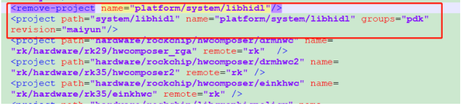

Git/Gerrit平台
--- Git比svn好用
--- Gerrit一款开源免费的代码评审平台，基于GIT的版本控制系统，目前国内大多数公式均采用Gerrit平台进行代码评审/review管控。 ==> 项目主要使用该平台进行Merge审核。
Gerrit添加账号和密钥

- Gerrit的版本有时候不支持常用的RSA加密方式 --- 如在使用WSL2时，github可以正常拉取代码，gerrit会显示不识别，此时换一种更先进的加密方式，如ed25519格式的密钥，可以使得gerrit正常
Gerrit添加仓库和分支
1：联系管理员添加分支
2：添加仓库到manifest
- 拉manifest
3：修改相应分支仓库
- manifest\rk_manifests\include\rk_modules_repository_maiyun.xml 
4：提交merge后，需重新init该仓库所在项目，而后再提交相关代码
Gerrit拉取代码
--- Gerrit拉取代码和github差不多
-
拉取代码
git clone "ssh链接"即可
-
repo init
repo init --repo-url=ssh://替换成自己@10.110.1.100:29418/repo --no-repo-verify --repo-branch=reponew -u ssh://替换成自己@10.110.1.100:29418/manifest.git -m rk_3568_manifests/rk3568_linux_bu16.xml出现and try again是正常的；
-
repo sync 即可
Gerrit 基线-同步/编译/提交/撤销/回退
-
同步代码
repo sync -c --no-tags -j32 //**--no-tags** don't fetch tags.该选项指定不获取服务器上的tag信息 -
清除、重置(丢弃分支)、同步
repo forall -c git clean -fd && repo forall -c git reset --hard && repo sync -c --no-tags # 解决repo问题 .repo/repo/repo forall -c git clean -fd && .repo/repo/repo forall -c git reset --hard && .repo/repo/repo sync -c --no-tags -
编译
//编译 source build/envsetup.sh lunch 40 ./build.sh -AUCKu -
提交
//代码提交 # 添加这两个文件 git add 文件名1 文件名2 # 添加所有文件 git add . # 添加已跟踪文件 git add -u . # 添加已跟踪和未跟踪的文件 git add -A . # 取消添加该文件 git reset HEAD+文件名//example # 添加所有changes文件 git add . git commit -m "[Project][Module]Add for xxx by xxx" # 查看分支 git branch -a * (HEAD detached from 984f637aa77e) remotes/m/master -> origin/a1 remotes/origin/a1 remotes/origin/master # 推送至a1分支上 git push origin HEAD:refs/for/a1 -
撤销
git reset --hard HEAD (撤销最新的提交) git reset --hard HEAD^ (撤销上一次提交) git reset --hard HEAD^^ (撤销上上一次提交) git reset --hard commit ID (commit ID指的是通过git log看到的commit后面的一长串ID的前7位) -
回退/恢复
git log git checkout -f 487de35b82fd72b78058b7c5efa34e9a59e0bb87 git reset --hard "xxxxxxxx"
Gerrit-本地分支-查看/创建/切换/重命名/删除
-
查看
# 查看本地分支 git branch # 查看远程分支 git branch -r # 查看所有分支 git branch -a -
创建
# 仅创建 git branch name（分支名） # 创建并直接切换至该分支 git checkout -b name(分支名) -
切换
git checkout name（分支名） -
重命名
# 重命名本地分支 git branch -m old_name new_name -
删除
# 删除本地分支 git branch -d name # 删除远程分支（小卡拉米用不到的） git push origin -delete :name
Gerrit-本地远程仓库对比
-
更新本地远程分支后与本地分支进行对比
# 更新本地远程分支 git fetch origin # 对比 git diff 本地分支 origin/xxx //只能看到diff内容 # 通过log查看区别 git log git log origin/xxxx
Git-切换分支同步修改
-
将当前分支修改放入一个新的Git分支
# 暂存 git stash # 创建新的分支 git checkout -b new-feature # 将暂存拉到新的分支 git stash apply
Git-解除本地分支冲突
-
保存修改文件和记录修改内容
-
通过git stash 解决冲突
# 暂存 git stash # pull 更新 git pull <remote> <branch> //这里可以检查下是否是最新的，可能要拉取下远程分支 # 还原暂存 git stash pop
Git stash的用法
-
git stash 暂存本地修改至缓存区
-
Git-stash pop 和 Git-stash apply的区别
# 查看保存的信息和标记 git stash list # 拉取方式 git stash pop //拉取最新的暂存区同时删除对应的stash list git stash apply //不删除对应的stash list # 删除多的list git stash drop //删除最新的list git stash claer //清除全部的stash -
指定stash list
# git stash list # git stash xxxx stash@{x}
Git-patch 打包/应用
-
打包
# 打包最近的一个log git format-patch -1 # 打包最近的两个log git format-patch -2 # 同理打包最近的n个log git format-patch -n # 打包n1、n2版本间的patch git format-patch -n1 -n2 # 打包从根到指定log的所有patch git format-patch --root 6a99bdd14b66de695519cca7a72d9b652e9bfdc7 # 将patch输出到指定文件 git format-patch xxx --stdout > xxx.patch ==> git format-patch -4 --stdout > 1.patch -
应用
# 合并指定log git am xxx.patch
Git-Fork/上传
-
Fork
git clone xxxx(ssh) -
上传自己本地仓库
rm -r .git //删除原有git信息 git init git add . git commit -m "xxxx" //提前在git官网新建repository git remote add origin 远程库地址(如：git push --set-upstream origin master) git push --set-upstream origin master
gitignore
-
忽视如out等文件 --- 在.git同目录下
touch .gitignore //生成gitignore文件 vim .gitignore //改下需要忽略的文件 .gitignore 文件本身可以忽略 -
权限引起的git status未显示变化，但是vscode等ide显示changes --- 忽略权限即可
项目修改：git config core.filemode false 全局修改：git config --global core.filemode false
Git/Gerrit/Repo-error
-
error: failed to push some refs to
# 本质是第一次提交缺失Readme文件，第一次初始提交问题，按照出错提示即可 example： gitdir=$(git rev-parse --git-dir); scp -p -P 29418 xxxx@10.110.1.100:hooks/commit-msg ${gitdir}/hooks/ git commit --amend --no-edit -
invalid syntax 使用项目自带的repo即可：.repo/repo/repo syncu
# 普通用户repo失效 mkdir -p ~/.bin PATH="${HOME}/.bin:${PATH}" curl https://storage.googleapis.com/git-repo-downloads/repo > ~/.bin/repo chmod a+rx ~/.bin/repo -
python版本错误
//2.0/3.0 pyhton版本的老问题了 # 查看当前默认python版本 python --version # 查看python3位置 whereis python3 # 删除原有python2软链接 rm /usr/bin/python # 链接3.x版本的软链接 ln -s /usr/bin/python3.x /usr/bin/python # 重新检查当前python版本 -
git status未显示改动，但是VSCODE显示changes --- 文件权限导致changes提升 = =》忽视文件权限即可
项目修改：git config core.filemode false 全局修改：git config --global core.filemode false